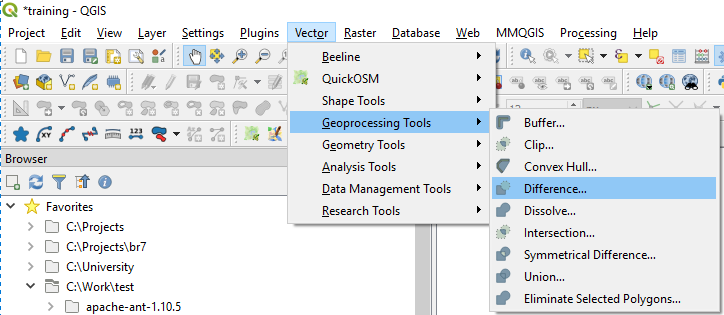
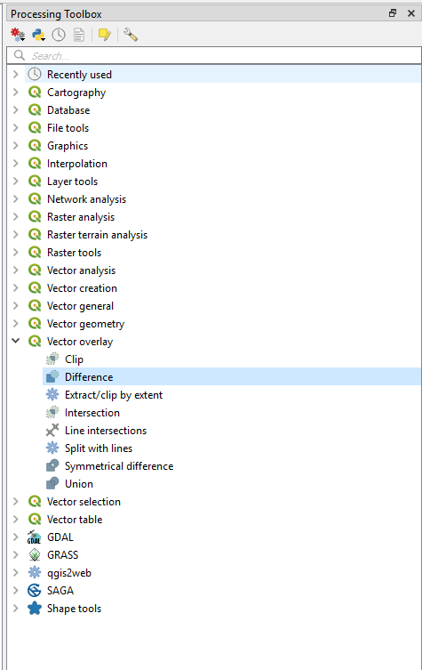
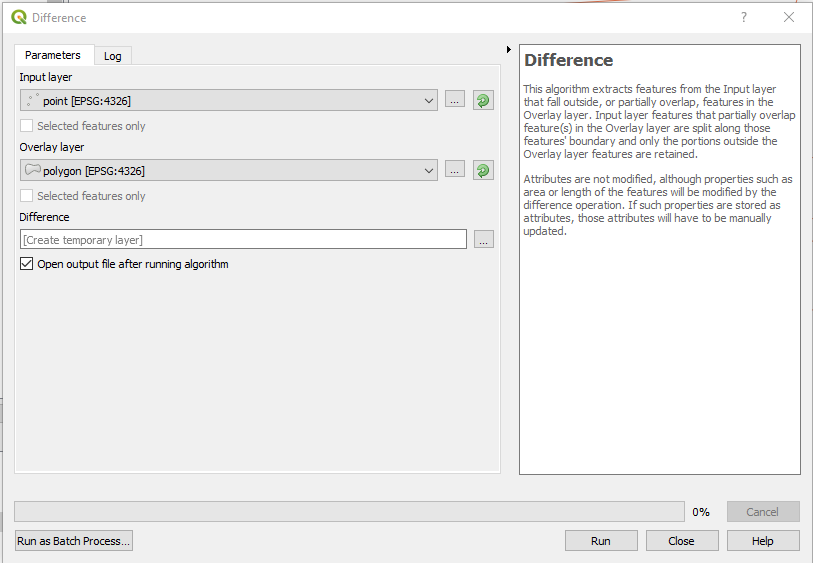
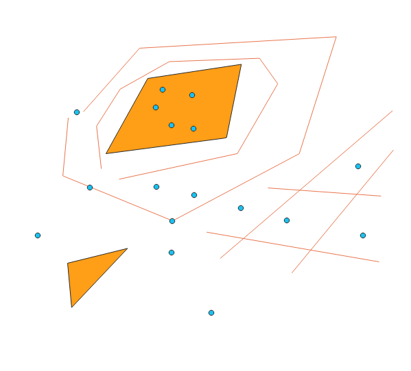
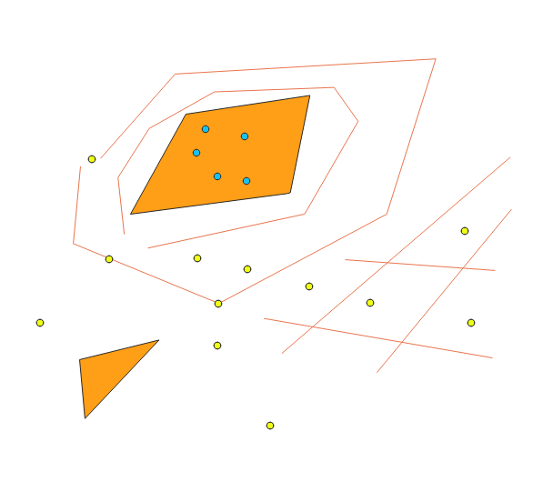

Analysis Toolbox - Overlay Toolset - Erase
Back To The Analysis Toolbox
Back To Homepage
The Erase tool performs an action more technically known as erase by mask, meaning using a mask layer to delete a part of your input layer.
Performing the same operation in QGIS is done with a similiar tool from the Processing Toolbox, If you don't know how to open it, feel free to head over to the Introduction To The Processing Toolbox.
After opening the processing toolbox we can either search or go to the Vector Overlay tools with the QGIS marker, there we can find the Difference tool, It should be there and also in the Vector Panel -> Geprocessing Tools -> Difference, both locations are shown below.
  The difference window should now open, i wanted to erase all the points masked by the polygon layer,
 that means that my input layer is point and my overlay layer is polygon,
 The output can be saved to a new layer in many different options, I chose to use a temporary layer, you can use a file or PostGIS\Geopackage table.
 My output looks like this, with the yellow points being the ones left after I erased the blue points that were covered by the polygon.
My output looks like this, with the yellow points being the ones left after I erased the blue points that were covered by the polygon. And thats it, Simple and easy to use, and now you know how to do that in Open Source. Go back to the top
Back To The Analysis Toolbox
Back To Homepage